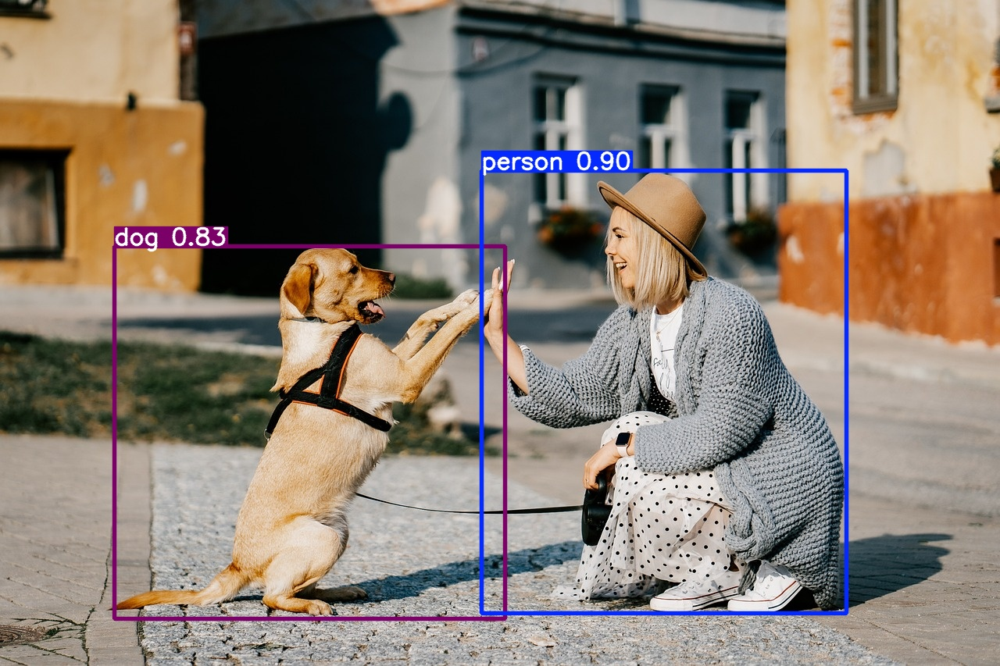
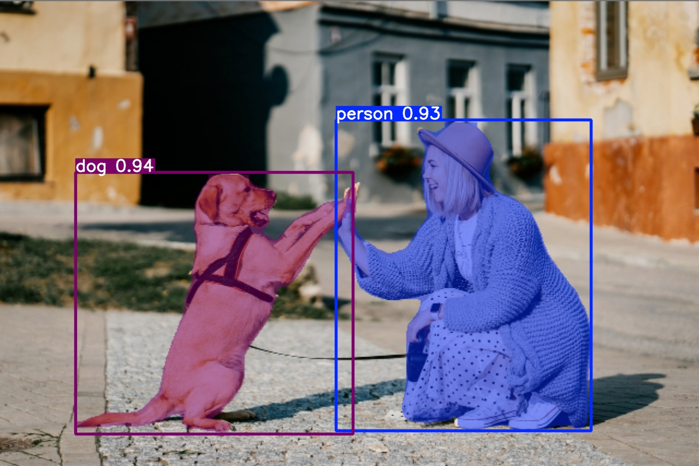
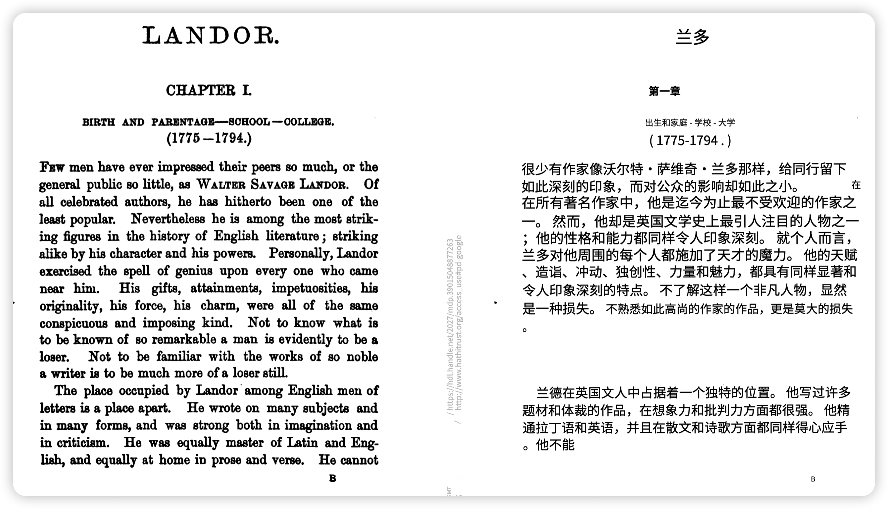
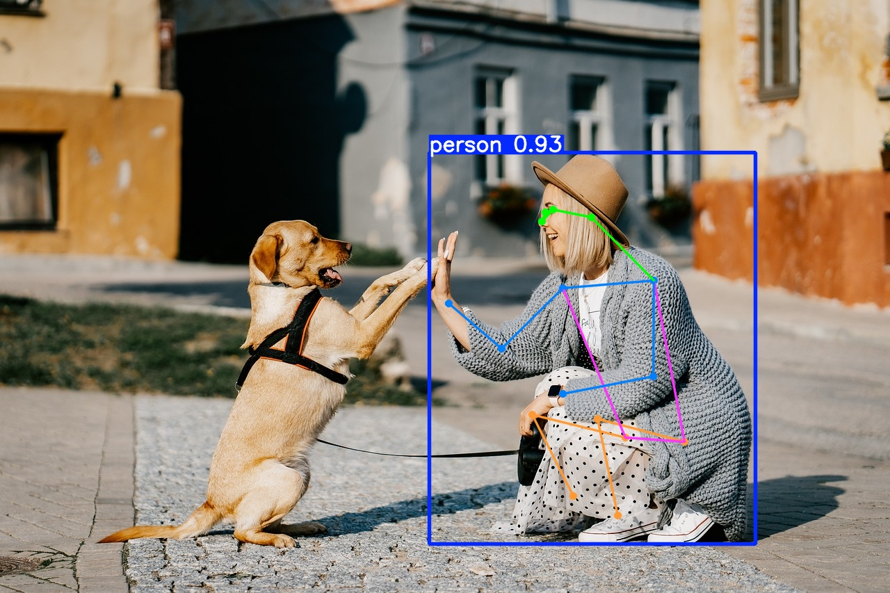

The Computer Vision section is currently under construction.
Please check back later for updates.
Project Setup
This chapter serves as an introduction to the topic of computer vision. We'll explore various tasks, demonstrating their use with code snippets. Even though this is just an introductory chapter and you might not grasp all the details yet, we encourage you to run the code on your own computer.
Computer Vision is a field of artificial intelligence that enables machines to interpret and understand the visual world. By using digital images from cameras and videos along with deep learning models, machines can accurately identify and classify objects - and then react to what they "see."
In this introduction, we'll delve into the basics of computer vision, its challenges, and how it's interconnected with other fields. Let's embark on this visual journey together!
What Is Computer Vision?
Before diving into computer vision, let's briefly touch upon artificial intelligence (AI). AI is a broad field aiming to create systems capable of performing tasks that typically require human intelligence. As one of the pioneers of AI, John McCarthy, described it:
"An attempt will be made to find how to make machines use language, form abstractions and concepts, solve kinds of problems now reserved for humans, and improve themselves."
-- John McCarthy
Artificial Intelligence is a multidisciplinary field divided into several subfields, each contributing to simulating intelligent behavior in machines. These include:
Machine Learning
Natural Language Processing
Robotics
Computer Graphics
Computer Vision
These subfields are interconnected; advancements in one often benefit the others. For instance, computer vision is essential in robotics for environment perception and in natural language processing for image captioning.
But now we still want to know: What is computer vision exactly?
At its core, computer vision seeks to automate tasks that the human visual system can do. It involves techniques for acquiring, processing, analyzing, and understanding images to produce numerical or symbolic information.
Biological Vision (Source: Ai Miquel Perello Nieto on Wikipedia) Interesting Fact
Did you know, that over 50% of the processing in the human brain is devoted directly or indirectly to visual information (Source: MIT News)
In other words, computer vision transforms visual data into meaningful information. Now, let's explore some typical computer vision tasks and see how they come to life through examples you can try yourself!
Typical Computer Vision Tasks
Classification
Assigning objects within an image to predefined categories or classes.
Example: Classification
Input
Output
>>> Output
1 person, 1 dog
Code
fromultralyticsimportYOLO# Load a modelmodel=YOLO("yolo11n.pt")# load an official model# Predict with the modelresults=model("dog.jpg")# predict on an image
Localization
Determining the exact location of an object within an image.
Detection
Identifying and locating multiple objects within an image, effectively combining classification and localization.
Example: Detection
Input
Output

Code
fromultralyticsimportYOLO# Load a modelmodel=YOLO("yolo11n.pt")# load an official model# Predict with the modelresults=model("dog.jpg",save=True)# predict on an imageresults[0].show()# display the image
Segmentation
Precisely delineating the pixels that belong to an object, separating it from the background.
Example: Segmentation
Input
Output

Code
fromultralyticsimportYOLO# Load a modelmodel=YOLO("yolo11n-seg.pt")# load an official model# Predict with the modelresults=model("dog.jpg",save=True)# predict on an imageresults[0].show()# display the image
Tracking
Monitoring the movement of objects over time in videos or live streams, analyzing factors like velocity and relative position.
Example: Tracking
Input
Output
Code
fromcollectionsimportdefaultdictimportcv2importnumpyasnpfromultralyticsimportYOLO# Load the YOLO11 modelmodel=YOLO("yolo11n.pt")# Open the video filevideo_path="street2.mp4"cap=cv2.VideoCapture(video_path)# Store the track historytrack_history=defaultdict(lambda:[])video=cv2.VideoWriter("output.mp4",0,25,(960,540))# Loop through the video frameswhilecap.isOpened():# Read a frame from the videosuccess,frame=cap.read()ifsuccess:# Run YOLO11 tracking on the frame, persisting tracks between framesresults=model.track(frame,persist=True,classes=[2])# Get the boxes and track IDsboxes=results[0].boxes.xywh.cpu()track_ids=results[0].boxes.id.int().cpu().tolist()# Visualize the results on the frameannotated_frame=results[0].plot()# Plot the tracksforbox,track_idinzip(boxes,track_ids):x,y,w,h=boxtrack=track_history[track_id]track.append((float(x),float(y)))# x, y center pointiflen(track)>30:# retain 90 tracks for 90 framestrack.pop(0)# Draw the tracking linespoints=np.hstack(track).astype(np.int32).reshape((-1,1,2))cv2.polylines(annotated_frame,[points],isClosed=False,color=(230,230,230),thickness=10)# Display the annotated framecv2.imshow("YOLO11 Tracking",annotated_frame)video.write(annotated_frame)# Break the loop if 'q' is pressedifcv2.waitKey(1)&0xFF==ord("q"):breakelse:# Break the loop if the end of the video is reachedbreak# Release the video capture object and close the display windowcap.release()cv2.destroyAllWindows()video.release()
Optical Character Recognition
Recognizing and extracting printed or handwritten text from images, enabling machines to read and process written information.
Example: OCR
Input

Output
>>> Output
LAN DOR.
CHAPTER IL
BIRTH AND PARENTAGE—SCHOOL — COLLEGE.
(1775 —1794.)
Few men have ever impressed their peers so much, or the
general public so little, as Watrer Savage Lanpor. Of
all celebrated authors, he has hitherto been one of the
least popular. Nevertheless he is among the most strik-
ing figures in the history of English literature ; striking
alike by his character and his powers. Personally, Landor
exercised the spell of genius upon every one who came
near him. His gifts, attainments, impetuosities, his
originality, his force, his charm, were all of the same
conspicuous and imposing kind. Not to know what is
to be known of so remarkable a man is evidently to be a
loser. Not to be familiar with the works of so noble
Code
# Need to install tesseract on your PC https://www.nutrient.io/blog/how-to-use-tesseract-ocr-in-python/fromPILimportImageimportpytesseractprint(pytesseract.image_to_string(Image.open('scan.png')))
Facial Recognition
Identifying individuals based on their facial features and recognizing various facial expressions.
# You need to install cmake on your PC first# https://github.com/ageitgey/face_recognition?tab=readme-ov-fileimportface_recognitionimportcv2importnumpyasnp# Load a sample picture and learn how to recognize it.obama_image=face_recognition.load_image_file("obama.jpg")obama_face_encoding=face_recognition.face_encodings(obama_image)[0]# Load a sample picture and learn how to recognize it.trump_image=face_recognition.load_image_file("trump.jpg")trump_face_encoding=face_recognition.face_encodings(trump_image)[0]# Load a second sample picture and learn how to recognize it.biden_image=face_recognition.load_image_file("biden.jpg")biden_face_encoding=face_recognition.face_encodings(biden_image)[0]# Create arrays of known face encodings and their namesknown_face_encodings=[obama_face_encoding,trump_face_encoding,biden_face_encoding]known_face_names=["Barack Obama","Donald Trump","Joe Biden"]# Initialize some variablesface_locations=[]face_encodings=[]face_names=[]process_this_frame=Truergb_small_frame=face_recognition.load_image_file("trump2.jpg")face_locations=face_recognition.face_locations(rgb_small_frame)face_encodings=face_recognition.face_encodings(rgb_small_frame,face_locations)face_names=[]forface_encodinginface_encodings:# See if the face is a match for the known face(s)matches=face_recognition.compare_faces(known_face_encodings,face_encoding)name="Unknown"# Or instead, use the known face with the smallest distance to the new faceface_distances=face_recognition.face_distance(known_face_encodings,face_encoding)best_match_index=np.argmin(face_distances)ifmatches[best_match_index]:name=known_face_names[best_match_index]face_names.append(name)# Display the resultsfor(top,right,bottom,left),nameinzip(face_locations,face_names):# Draw a box around the facecv2.rectangle(rgb_small_frame,(left,top),(right,bottom),(0,0,255),2)# Draw a label with a name below the facecv2.rectangle(rgb_small_frame,(left,bottom-35),(right,bottom),(0,0,255),cv2.FILLED)font=cv2.FONT_HERSHEY_DUPLEXcv2.putText(rgb_small_frame,name,(left+6,bottom-6),font,1.0,(255,255,255),1)# Display the resulting imagecv2.imshow('Video',cv2.cvtColor(rgb_small_frame,cv2.COLOR_BGR2RGB))cv2.waitKey(0)cv2.destroyAllWindows()cv2.imwrite('trump_out.jpg',cv2.cvtColor(rgb_small_frame,cv2.COLOR_BGR2RGB))
Pose Estimation
Determining the position and orientation of an object or person relative to a reference point or coordinate system.
Example: Pose Estimation
Input
Output

Code
fromultralyticsimportYOLO# Load a modelmodel=YOLO("yolo11n-pose.pt")# load an official model# Predict with the modelresults=model("dog.jpg",save=True)# predict on an imageresults[0].show()# display the image
These tasks represent the core of computer vision, each contributing to its wide-ranging real-world applications. From enabling machines to read and understand handwritten documents to enhancing interactive gaming experiences through accurate motion tracking, the advancements in computer vision are transforming industries and everyday life.
And: as you can see, they're not just theoretical concepts - you can try them out yourself !
Applications
Computer vision has a wide range of applications across various industries.
Possible Applications for Computer Vision
Robots use computer vision to navigate and interact with their environment.
Self-driving cars rely heavily on computer vision to perceive the road and make driving decisions.
Computer vision aids in medical imaging for diagnostics and treatment planning.
However, interpreting these images to understand the scene involves complex algorithms that can discern patterns, shapes, and colors. This process involves several steps:
Image Acquisition: Capturing the visual data using cameras or sensors.
Preprocessing: Enhancing image quality and correcting distortions.
Feature Extraction: Identifying edges, textures, and other significant parts of the image.
High-Level Processing: Recognizing objects, understanding scenes, and making decisions.
Challenges in Computer Vision
Despite the advancements, computer vision faces several challenges. Let's explore them.
Inverse Problem
One of the fundamental challenges in computer vision is the inverse problem: Reconstructing a 3D scene from a 2D image is challenging because multiple 3D scenes can produce the same 2D projection.
An object can look vastly different from various angles. For example, a car viewed from the front, side, or top presents different shapes and features, complicating recognition tasks.
Deformation
Non-rigid objects, like clothing or human bodies, can change shape, making it challenging to maintain consistent recognition.
Occlusion
Objects in images often block parts of other objects. Detecting partially visible objects requires algorithms to infer the hidden parts.
Illumination
Lighting conditions can alter the appearance of objects. An apple under bright sunlight looks different from one under indoor lighting.
Objects within the same category can look very different.Chairs come in numerous designs—armchairs, stools, recliners—but they all serve the same function. Recognizing all variations as "chairs" is challenging for computer vision systems.
Number of Categories
There are thousands of object categories, each with its own variations. Building systems that can recognize all of them requires extensive data and sophisticated algorithms.
By understanding these challenges, you're better equipped to appreciate the complexities involved in teaching machines to see.
Congratulations! You've taken your first steps into the world of computer vision. Feel free to experiment with the code examples provided and explore further. In the next chapters, we'll delve deeper into specific algorithms and techniques.

{kind=link}


{kind=link}


{kind=link}


{kind=link}
{kind=link}